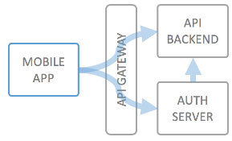

Securing Mobile APIs using the OAuth2 Resource Owner Password Flow
For mobile applications (on smartphones/tablets) a typical use case is that you let a user log in to your service, or create some kind of unique identifier for the user's device, which is considered the identity of the user, and that you then allow access only in the context of this user to your backend API.
In order to prevent fraud or excessive usage of your API, it's also typical to apply rate limiting by number of calls per authorized user and application.
You can now leverage the "local" authentication method of wicked to store your mobile users email addresses and passwords. Wicked can act as a full featured identity provider for your mobile backend, i.e. be a full mobile backend, including authentication and authorization.

For development time, the following workflow is typical:
For the OAuth2.0 Resource Owner Password Grant, it is not necessary and advised against to also incorporate the client secret into the mobile app; in case the API also supports the client credentials flow, this would enable attackers to reverse engineer the app and extract the credentials. The client ID on the other hand is only helpful in combination with an end user identity, which the end user will also try to protect.
The wicked Authorization Server would also reject calls using the Resource Owner Password Grant from public applications presenting their client secret, and vice versa.
At runtime, the authentication and authorization of the API usage for the end user inside the mobile app will work as follows. When the end user opens the application for the first time, this happens:
The mobile app can (and should) now discard the end user username and password, and instead make use of the access token; in case the access token expires, the mobile app cann use the refresh token to obtain a new access token (and refresh token).
This means that the mobile app does not need to keep the user's actual secrets; it has exchanged them for a purpose-tied pair of access and refresh tokens; even if the mobile app is hacked, the user's username and password are no longer present in the memory/storage of the mobile app, which obviously increases security.
Wicked packs brings all the necessary components to implement this out of the box:
X-Authenticated-UserId),
which application is calling the API on behalf of the user.
In case you implement using node.js, you can also leverage the wicked SDK to have even more influence on the user and registration management. Read up on the wicked SDK here:
In a future version, wicked will also support the PKCE enhancement of the Authorization Code Grant (see RFC 7636) and OAuth2 for native apps (see RFC 8252). This will enable even more flexible authentication scenarios for mobile/native applications.
© 2016-2018 Haufe-Lexware GmbH & Co. KG, www.haufe-lexware.com, www.haufe.de, www.lexware.de, www.haufe-akademie.de